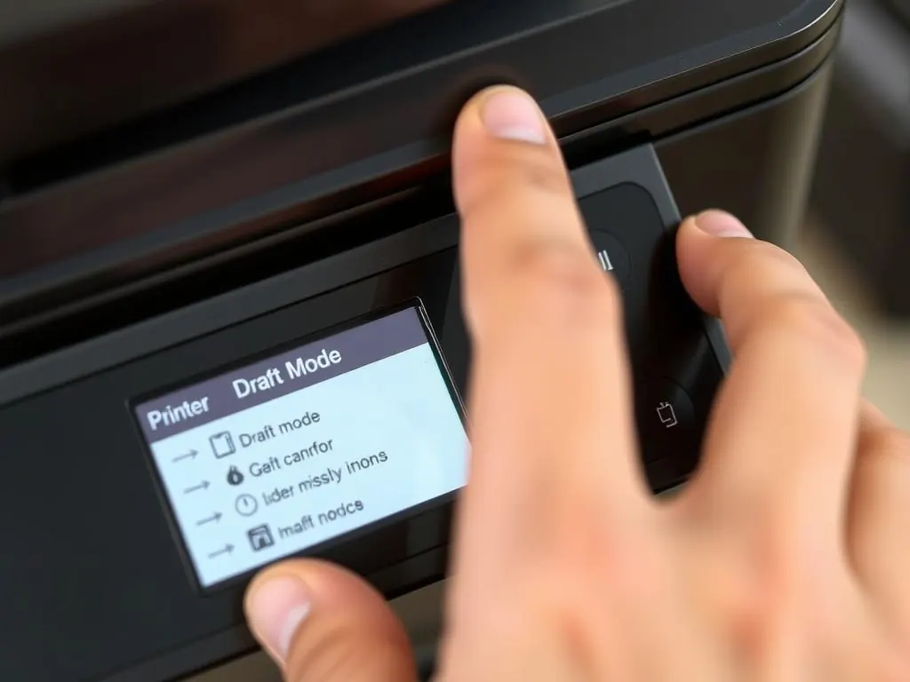

Printers
12 Ways to Make Your Ink Cartridges Last Longer
Reduce ink waste and printing costs with practical document, settings, maintenance and cartridge-storage habits.
Introduction: Better Printing Habits Can Save Ink
Printing ink cartridges can be an ongoing cost in the home, for students and small businesses. How much you use will depend on your printer, cartridge design and what you are printing. Whilst you cannot make them last forever, there are ways to reduce wastage whilst still keeping your printing readable.
The best way to reduce wastage is to be selective with your printing, use appropriate quality settings and look after your printer. Don’t be too extreme with disabling any important functions. Below are 12 tips to help you get the most out of your ink cartridges.

1. Use Print Preview
By taking a quick look at your print preview you can avoid printing unnecessary pages. It allows you to see how many pages you’ll be printing, your margins, orientation and the section of your document you’re printing. It will also show you if you have any blank pages. Sometimes you might find you’re printing a huge amount of blank columns from your spreadsheet, or unnecessary menus, adverts and navigation bars from your web page.
By selecting just the pages/sections you need to print, you can save on paper and ink. If printing a long document, perhaps you can just print a digital copy. This is an easy way to save.
2. Use Draft/Economy Settings
Most inkjet printers will have a draft/economy/fast printing setting. This will generally use less ink and print quicker, so is great for notes, drafts and documents that don’t need to look nice. The options will vary between different printers.
For your final document, photos and anything that needs to look nice, you should use the standard/high quality setting. Not all fonts and small text/images will look great using draft settings. Try printing a sample page to see if it will be readable.

3. Print in Black and White
Printing in colour can cause you to use multiple cartridges, even if your page is mostly black. If you’re printing a document that has no images, use the grey scale/monochrome option. Check your printer drivers to see if you can change the colour options.
Some inkjet printers will use colour ink when printing in black and white, due to their maintenance requirements. This will vary depending on your printer. If you find that your colour cartridges are running out, then please refer to your manual. Don’t remove your colour cartridges unless the manufacturer specifically state they can be used.
4. Use Appropriate Fonts
Using larger bold headings and fancy fonts can cause you to use more ink. When printing regular documents, use a simple font in a sensible size. Avoid using unnecessary coloured backgrounds, thick borders and large solid shapes. Just because your document is readable doesn’t mean it has to look busy.
Whilst some fonts are advertised as being ink saving, this will depend on the font and the size you are printing in. Focus on readability rather than reducing the font size to the point where it becomes difficult to read. If printing something formal or for customers, use a professional font.
5. Don’t Print Unnecessary Images
Images, solid colour blocks and fancy backgrounds can use a lot of ink. If you’re printing a document to review the text, use the text only option. If your application allows, turn off background graphics. Crop your images to just the section you need and make them smaller if you don’t need them in a high resolution.
If printing a web page, use the reader/simple print option. This can hide any adverts and navigation whilst keeping the main article. Check your preview to make sure you haven’t lost any important diagrams, labels or references.
6. Print Multiple Pages Per Sheet
By using multiple pages per sheet, you can print 2 or more pages of your document onto 1 sheet. This can help with notes from lectures, drafts and internal documents. This can save on paper, and if you’re printing fewer pages it can also save on ink.
Don’t use this option if you’re printing small text, forms that need to be filled in by hand or if you need to read each page easily. If printing a booklet, use the correct booklet option.
7. Use Your Printer Regularly
If you don’t use your inkjet printer regularly, the ink can dry up and cause blocked nozzles. This will cause the printer to clean itself, which will use ink. If you don’t use your printer often, follow the manufacturers guidelines. Some printers will benefit from a small print at the appropriate time to keep the ink flowing. The recommendations will vary.
Don’t print large colour pages just to avoid your printer getting blocked, as this can cause more wastage. If you know you won’t be using your printer for a long time, refer to your manual.
8. Only Clean When Necessary
Cleaning your printhead can help restore any lines/colours that have gone missing, however it will use ink. Firstly run a nozzle check and only clean if there is an issue with the test pattern. After cleaning, run another nozzle check.
If cleaning isn’t improving your pattern, stop cleaning and refer to the manufacturers troubleshooting guide or service provider. Over cleaning can cause your maintenance tank/waste ink absorber to fill up and may not resolve any physical issues with your printhead.
9. Use the Correct Paper
Inkjet paper can absorb ink differently compared to normal copier paper. If you don’t set the correct paper type, you may get smudging, poor colours and too much ink being used. Make sure the paper type matches the paper you are using in your print driver.
For regular drafts use plain paper, and the correct photo paper for photos. Keep your paper in a dry place, and make sure it is flat. If your paper is damp, curled or not the right type, you may get poor results and will need to reprint.
10. Use the Correct Cartridge
Ensure you are using the correct cartridges for your printer model. Even if they look the same, they may have a different chip, nozzles and ink. Using the wrong cartridges can cause leakage, recognition issues and unreliable prints. This can cause ink and paper wastage.
Depending on your model you may have original and compatible cartridges. Compare the total cost, page yield, warranty and reliability of your supplier. Don’t always go for the cheapest option as it may not give you the best value for money.
11. Store Spare Cartridges Correctly
Store your spare cartridges in their original packaging until you need them. Keep them in a cool dry place, away from direct sunlight and extreme temperatures. The package will state how to store them, make sure you follow this. Do not remove any tape or covers.
Once opened the cartridge may only have a short shelf life depending on the design and storage. Don’t leave it exposed to the air or place it on a dusty surface. Don’t touch the nozzle plate or electrical connections.
12. Monitor Your Printing
If your cartridges seem to be running out quickly, take note of what you’re printing. Compare the estimated page yield of your printer to the actual printing. The page yield given by manufacturers will be based on standardised testing, so may not match your documents. If your pages have images, charts or lots of graphics, the page yield may not be the same.
If you have a small office, set the printer to sensible default settings. Explain these to your staff. By using duplex printing, print preview, grey scale for text and draft printing for internal copies you can reduce wastage. Take note of any maintenance warnings and replace cartridges when needed based on the quality of your prints.
Conclusion
Overall, the main way to increase the life of your ink cartridges is to avoid printing unnecessary items and using the correct settings. Use print preview, draft printing, black and white printing and avoid large backgrounds. Look after your printer, store your supplies and use compatible cartridges. This will help you reduce wastage whilst keeping your printing quality.
Need a hand with your printer or laptop?
Printerworld sells printers, laptops and genuine supplies, and repairs and services both. Bring in your model number and we will help you get it right.